Microwave v2 microwave_v2 procedural, this project
4 tasks · 12 videos · 24 movable parts · 21 contact-tested keys · 25 hand anchors
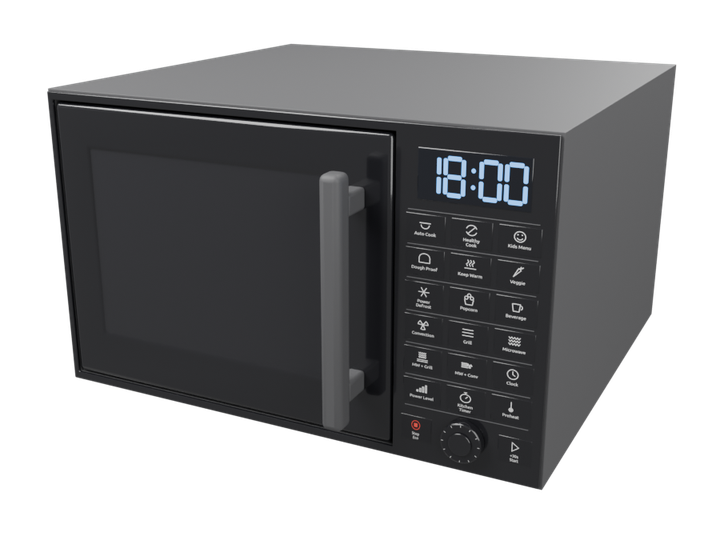
closed, three-quarter front 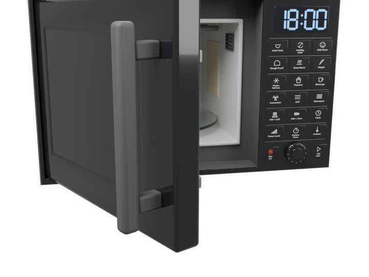
door open: turntable, roller ring, lamp grille, mica cover 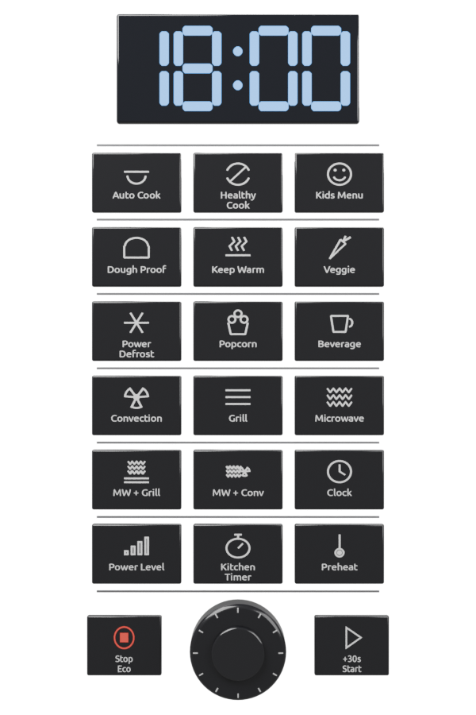
control panel: display, 18 preset keys, dial, Stop/Eco, +30s/Start Tasks and videos
One block per task: the action sentences it was given (each one a family with grounded arguments, with what the executor made of it), the three camera videos of its recorded run (external, first-person, hand close-up), the phases, the step timeline and the key contacts measured in MuJoCo. Click a timeline bar or a keyframe to jump the videos there.
microwave_v2_cook microwave_v2 · 51.4 s · 48 steps · hands: left 3/3 key presses contact-tested ✓ status sentence family grounded target normalized achieved why refused succeeded open the microwave door open door opening 1.0, joint_from 0.0, joint_to -1.45 joint -1.45, opening 1.0 succeeded move the bowl into the microwave move bowl grasp side_wrap_left, lift_m 0.14, place cavity_place distance_to_place_m 0.0 succeeded close the microwave door close door opening 0.0, joint_from -1.45, joint_to 0.0 joint 0.0, opening -0.0 succeeded press the Microwave key press key_microwave times 1, hold_s 0.3 1/1 presses activated succeeded turn the dial to 2:25 turn dial setting 2:25, joint_from_rad 0.0, joint_to_rad 1.45, regrips 1 joint_rad 1.45 succeeded press the Start key press key_start_30s times 1, hold_s 0.3 1/1 presses activated succeeded wait 4 seconds wait duration_s 4.0 succeeded press the Stop key press key_stop_eco times 1, hold_s 0.3 1/1 presses activated succeeded open the microwave door open door opening 1.0, joint_from 0.0, joint_to -1.45 joint -1.45, opening 1.0 succeeded move the bowl back where it was move bowl grasp side_wrap_left, lift_m 0.14, place prop_home.bowl distance_to_place_m 0.0
Cook a bowl for 2:25 at full microwave power, then take it out
microwave_v2_cook · external camera · 51.5 smicrowave_v2_cook · first-person camera · 51.5 smicrowave_v2_cook · hand close-up camera · 51.5 s
▶ play all three pause ↺ restart
a01_settle pull door move bowl → cavity_place push door press key_microwave rotate dial press key_start_30s wait · display, interior_light, turntable press key_stop_eco pull door move bowl → home: bowl
gaze left hand right hand body device 0s 5s 10s 15s 20s 25s 30s 35s 40s 45s 50s a01_settle · idle · 0.0–1.0 s · kinematic a02_look_door · look_at · 1.0–1.6 s · kinematic a03_reach_door · reach left · 1.0–2.6 s · kinematic a04_align_door · pregrasp left · 2.6–3.2 s · kinematic a05_pull_door · pull left · 3.2–5.4 s · assisted_grasp a06_release_door · release left · 5.4–6.0 s · kinematic a07_left_back · retreat left · 6.0–7.4 s · kinematic a08_look_bowl · look_at · 7.4–8.0 s · kinematic a09_move_bowl · pick_place left · 7.4–12.5 s · assisted_grasp a09_move_bowl a10_left_back · retreat left · 12.5–13.9 s · kinematic a11_look_door · look_at · 13.9–14.5 s · kinematic a12_reach_door · reach left · 13.9–15.5 s · kinematic a13_align_door · pregrasp left · 15.5–16.1 s · kinematic a14_push_door · push left · 16.1–18.3 s · assisted_grasp a15_release_door · release left · 18.3–18.9 s · kinematic a16_look_microwave · look_at · 18.9–19.5 s · kinematic a17_align_microwave · pregrasp left · 18.9–19.7 s · kinematic a18_press_microwave · press left · 19.7–20.4 s · contact_dynamics a19_release_microwave · release left · 20.4–20.9 s · kinematic a20_look_dial · look_at · 20.9–21.5 s · kinematic a21_align_dial · pregrasp left · 20.9–21.6 s · kinematic a22_turn_dial_1 · rotate left · 21.6–22.6 s · assisted_grasp a23_regrip_dial_1 · release left · 22.6–23.1 s · kinematic a24_pinch_dial_1 · pregrasp left · 23.1–23.7 s · kinematic a25_turn_dial_2 · rotate left · 23.7–24.7 s · assisted_grasp a26_release_dial · release left · 24.7–25.2 s · kinematic a27_look_start_30s · look_at · 25.2–25.8 s · kinematic a28_align_start_30s · pregrasp left · 25.2–26.0 s · kinematic a29_press_start_30s · press left · 26.0–26.7 s · contact_dynamics a30_release_start_30s · release left · 26.7–27.2 s · kinematic a31_left_back · retreat left · 27.2–28.6 s · kinematic a32_wait · idle · 28.6–32.6 s · kinematic a32_wait a33_look_stop_eco · look_at · 32.6–33.2 s · kinematic a34_reach_stop_eco · reach left · 32.6–34.3 s · kinematic a35_align_stop_eco · pregrasp left · 34.3–35.0 s · kinematic a36_press_stop_eco · press left · 35.0–35.7 s · contact_dynamics a37_release_stop_eco · release left · 35.7–36.2 s · kinematic a38_left_back · retreat left · 36.2–37.6 s · kinematic a39_look_door · look_at · 37.6–38.2 s · kinematic a40_reach_door · reach left · 37.6–39.1 s · kinematic a41_align_door · pregrasp left · 39.1–39.8 s · kinematic a42_pull_door · pull left · 39.8–42.0 s · assisted_grasp a43_release_door · release left · 42.0–42.6 s · kinematic a44_left_back · retreat left · 42.6–44.0 s · kinematic a45_look_bowl · look_at · 44.0–44.6 s · kinematic a46_move_bowl · pick_place left · 44.0–49.0 s · assisted_grasp a46_move_bowl a47_left_back · retreat left · 49.0–50.4 s · kinematic a48_end · idle · 50.4–51.4 s · kinematic display · illustrative_effect display interior_light · illustrative_effect interior_light turntable · device_motor turntable contact_start @ 19.94 s (key_microwave, measured) button_activated @ 19.98 s (key_microwave, measured) button_released @ 20.44 s (key_microwave, measured) contact_end @ 20.44 s (key_microwave, measured) contact_start @ 26.27 s (key_start_30s, measured) button_activated @ 26.31 s (key_start_30s, measured) button_released @ 26.77 s (key_start_30s, measured) contact_end @ 26.77 s (key_start_30s, measured) contact_start @ 35.25 s (key_stop_eco, measured) button_activated @ 35.29 s (key_stop_eco, measured) button_released @ 35.75 s (key_stop_eco, measured) contact_end @ 35.75 s (key_stop_eco, measured) 0.4 s · a01_settle 3.6 s · pull door 10.0 s · move bowl → cavity_place 15.9 s · push door 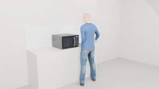
19.7 s · press key_microwave 22.6 s · rotate dial 26.6 s · press key_start_30s 30.2 s · wait · display, interior_light, turntable 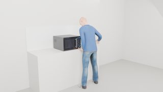
34.6 s · press key_stop_eco 40.1 s · pull door 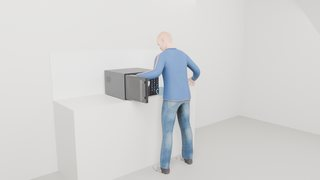
47.0 s · move bowl → home: bowl
microwave_v2_defrost microwave_v2 · 49.4 s · 45 steps · hands: left 3/3 key presses contact-tested ✓ status sentence family grounded target normalized achieved why refused succeeded open the microwave door open door opening 1.0, joint_from 0.0, joint_to -1.45 joint -1.45, opening 1.0 succeeded move the bowl into the microwave move bowl grasp side_wrap_left, lift_m 0.14, place cavity_place distance_to_place_m 0.0 succeeded close the microwave door close door opening 0.0, joint_from -1.45, joint_to 0.0 joint 0.0, opening -0.0 succeeded press the Power Defrost key press key_power_defrost times 1, hold_s 0.3 1/1 presses activated succeeded turn the dial to 300 g turn dial setting 300 g, joint_from_rad 0.0, joint_to_rad 0.9009, regrips 0 joint_rad 0.9009 succeeded press the Start key press key_start_30s times 1, hold_s 0.3 1/1 presses activated succeeded wait 4 seconds wait duration_s 4.0 succeeded press the Stop key press key_stop_eco times 1, hold_s 0.3 1/1 presses activated succeeded open the microwave door open door opening 1.0, joint_from 0.0, joint_to -1.45 joint -1.45, opening 1.0 succeeded move the bowl back where it was move bowl grasp side_wrap_left, lift_m 0.14, place prop_home.bowl distance_to_place_m 0.0
Defrost 300 g in a bowl with the Power Defrost program, then take it out
microwave_v2_defrost · external camera · 49.4 smicrowave_v2_defrost · first-person camera · 49.4 smicrowave_v2_defrost · hand close-up camera · 49.4 s
▶ play all three pause ↺ restart
a01_settle pull door move bowl → cavity_place push door press key_power_defrost rotate dial press key_start_30s wait · display, interior_light, turntable press key_stop_eco pull door move bowl → home: bowl
gaze left hand right hand body device 0s 5s 10s 15s 20s 25s 30s 35s 40s 45s a01_settle · idle · 0.0–1.0 s · kinematic a02_look_door · look_at · 1.0–1.6 s · kinematic a03_reach_door · reach left · 1.0–2.6 s · kinematic a04_align_door · pregrasp left · 2.6–3.2 s · kinematic a05_pull_door · pull left · 3.2–5.4 s · assisted_grasp a06_release_door · release left · 5.4–6.0 s · kinematic a07_left_back · retreat left · 6.0–7.4 s · kinematic a08_look_bowl · look_at · 7.4–8.0 s · kinematic a09_move_bowl · pick_place left · 7.4–12.5 s · assisted_grasp a09_move_bowl a10_left_back · retreat left · 12.5–13.9 s · kinematic a11_look_door · look_at · 13.9–14.5 s · kinematic a12_reach_door · reach left · 13.9–15.5 s · kinematic a13_align_door · pregrasp left · 15.5–16.1 s · kinematic a14_push_door · push left · 16.1–18.3 s · assisted_grasp a15_release_door · release left · 18.3–18.9 s · kinematic a16_look_power_defrost · look_at · 18.9–19.5 s · kinematic a17_align_power_defrost · pregrasp left · 18.9–19.7 s · kinematic a18_press_power_defrost · press left · 19.7–20.4 s · contact_dynamics a19_release_power_defrost · release left · 20.4–20.9 s · kinematic a20_look_dial · look_at · 20.9–21.5 s · kinematic a21_align_dial · pregrasp left · 20.9–21.6 s · kinematic a22_turn_dial · rotate left · 21.6–22.7 s · assisted_grasp a23_release_dial · release left · 22.7–23.2 s · kinematic a24_look_start_30s · look_at · 23.2–23.8 s · kinematic a25_align_start_30s · pregrasp left · 23.2–23.9 s · kinematic a26_press_start_30s · press left · 23.9–24.6 s · contact_dynamics a27_release_start_30s · release left · 24.6–25.1 s · kinematic a28_left_back · retreat left · 25.1–26.5 s · kinematic a29_wait · idle · 26.5–30.5 s · kinematic a29_wait a30_look_stop_eco · look_at · 30.5–31.1 s · kinematic a31_reach_stop_eco · reach left · 30.5–32.3 s · kinematic a32_align_stop_eco · pregrasp left · 32.3–32.9 s · kinematic a33_press_stop_eco · press left · 32.9–33.6 s · contact_dynamics a34_release_stop_eco · release left · 33.6–34.1 s · kinematic a35_left_back · retreat left · 34.1–35.5 s · kinematic a36_look_door · look_at · 35.5–36.1 s · kinematic a37_reach_door · reach left · 35.5–37.1 s · kinematic a38_align_door · pregrasp left · 37.1–37.7 s · kinematic a39_pull_door · pull left · 37.7–39.9 s · assisted_grasp a40_release_door · release left · 39.9–40.5 s · kinematic a41_left_back · retreat left · 40.5–41.9 s · kinematic a42_look_bowl · look_at · 41.9–42.5 s · kinematic a43_move_bowl · pick_place left · 41.9–47.0 s · assisted_grasp a43_move_bowl a44_left_back · retreat left · 47.0–48.4 s · kinematic a45_end · idle · 48.4–49.4 s · kinematic display · illustrative_effect display interior_light · illustrative_effect interior_light turntable · device_motor turntable contact_start @ 19.94 s (key_power_defrost, measured) button_activated @ 19.98 s (key_power_defrost, measured) button_released @ 20.44 s (key_power_defrost, measured) contact_end @ 20.44 s (key_power_defrost, measured) contact_start @ 24.22 s (key_start_30s, measured) button_activated @ 24.26 s (key_start_30s, measured) button_released @ 24.72 s (key_start_30s, measured) contact_end @ 24.72 s (key_start_30s, measured) contact_start @ 33.20 s (key_stop_eco, measured) button_activated @ 33.24 s (key_stop_eco, measured) button_released @ 33.70 s (key_stop_eco, measured) contact_end @ 33.70 s (key_stop_eco, measured) 0.4 s · a01_settle 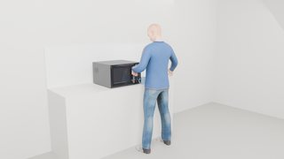
3.6 s · pull door 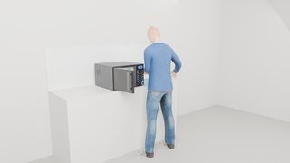
10.0 s · move bowl → cavity_place 15.9 s · push door 19.7 s · press key_power_defrost 21.8 s · rotate dial 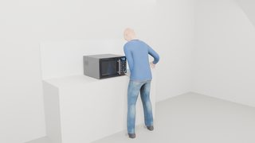
24.5 s · press key_start_30s 28.1 s · wait · display, interior_light, turntable 32.5 s · press key_stop_eco 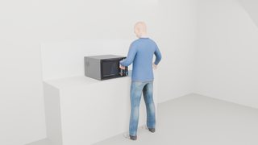
38.1 s · pull door 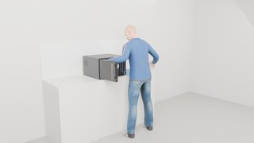
44.9 s · move bowl → home: bowl
microwave_v2_reheat microwave_v2 · 46.1 s · 40 steps · hands: left 3/3 key presses contact-tested ✓ status sentence family grounded target normalized achieved why refused succeeded open the microwave door open door opening 1.0, joint_from 0.0, joint_to -1.45 joint -1.45, opening 1.0 succeeded move the mug into the microwave move mug grasp handle, lift_m 0.14, place cavity_place distance_to_place_m 0.0 succeeded close the microwave door close door opening 0.0, joint_from -1.45, joint_to 0.0 joint 0.0, opening -0.0 succeeded press the Start key twice press key_start_30s times 2, hold_s 0.3 2/2 presses activated succeeded wait 4 seconds wait duration_s 4.0 succeeded press the Stop key press key_stop_eco times 1, hold_s 0.3 1/1 presses activated succeeded open the microwave door open door opening 1.0, joint_from 0.0, joint_to -1.45 joint -1.45, opening 1.0 succeeded move the mug back where it was move mug grasp handle, lift_m 0.14, place prop_home.mug distance_to_place_m 0.0
Reheat a mug with two +30 s presses, then take it out
microwave_v2_reheat · external camera · 46.1 smicrowave_v2_reheat · first-person camera · 46.1 smicrowave_v2_reheat · hand close-up camera · 46.1 s
▶ play all three pause ↺ restart
a01_settle pull door move mug → cavity_place push door press key_start_30s wait · display, interior_light, turntable press key_stop_eco pull door move mug → home: mug
gaze left hand right hand body device 0s 5s 10s 15s 20s 25s 30s 35s 40s 45s a01_settle · idle · 0.0–1.0 s · kinematic a02_look_door · look_at · 1.0–1.6 s · kinematic a03_reach_door · reach left · 1.0–2.6 s · kinematic a04_align_door · pregrasp left · 2.6–3.2 s · kinematic a05_pull_door · pull left · 3.2–5.4 s · assisted_grasp a06_release_door · release left · 5.4–6.0 s · kinematic a07_left_back · retreat left · 6.0–7.4 s · kinematic a08_look_mug · look_at · 7.4–8.0 s · kinematic a09_move_mug · pick_place left · 7.4–12.2 s · assisted_grasp a09_move_mug a10_left_back · retreat left · 12.2–13.6 s · kinematic a11_look_door · look_at · 13.6–14.2 s · kinematic a12_reach_door · reach left · 13.6–15.2 s · kinematic a13_align_door · pregrasp left · 15.2–15.8 s · kinematic a14_push_door · push left · 15.8–18.0 s · assisted_grasp a15_release_door · release left · 18.0–18.6 s · kinematic a16_look_start_30s · look_at · 18.6–19.2 s · kinematic a17_align_start_30s · pregrasp left · 18.6–19.4 s · kinematic a18_press_start_30s_1 · press left · 19.4–20.1 s · contact_dynamics a19_lift_start_30s_1 · release left · 20.1–20.4 s · kinematic a20_realign_start_30s_1 · pregrasp left · 20.4–20.9 s · kinematic a21_press_start_30s_2 · press left · 20.9–21.6 s · contact_dynamics a22_release_start_30s · release left · 21.6–22.1 s · kinematic a23_left_back · retreat left · 22.1–23.5 s · kinematic a24_wait · idle · 23.5–27.5 s · kinematic a24_wait a25_look_stop_eco · look_at · 27.5–28.1 s · kinematic a26_reach_stop_eco · reach left · 27.5–29.2 s · kinematic a27_align_stop_eco · pregrasp left · 29.2–29.9 s · kinematic a28_press_stop_eco · press left · 29.9–30.6 s · contact_dynamics a29_release_stop_eco · release left · 30.6–31.1 s · kinematic a30_left_back · retreat left · 31.1–32.5 s · kinematic a31_look_door · look_at · 32.5–33.1 s · kinematic a32_reach_door · reach left · 32.5–34.0 s · kinematic a33_align_door · pregrasp left · 34.0–34.7 s · kinematic a34_pull_door · pull left · 34.7–36.9 s · assisted_grasp a35_release_door · release left · 36.9–37.5 s · kinematic a36_left_back · retreat left · 37.5–38.9 s · kinematic a37_look_mug · look_at · 38.9–39.5 s · kinematic a38_move_mug · pick_place left · 38.9–43.7 s · assisted_grasp a38_move_mug a39_left_back · retreat left · 43.7–45.1 s · kinematic a40_end · idle · 45.1–46.1 s · kinematic display · illustrative_effect display interior_light · illustrative_effect interior_light turntable · device_motor turntable contact_start @ 19.64 s (key_start_30s, measured) button_activated @ 19.68 s (key_start_30s, measured) button_released @ 20.13 s (key_start_30s, measured) contact_end @ 20.13 s (key_start_30s, measured) contact_start @ 21.19 s (key_start_30s, measured) button_activated @ 21.23 s (key_start_30s, measured) button_released @ 21.69 s (key_start_30s, measured) contact_end @ 21.69 s (key_start_30s, measured) contact_start @ 30.17 s (key_stop_eco, measured) button_activated @ 30.21 s (key_stop_eco, measured) button_released @ 30.67 s (key_stop_eco, measured) contact_end @ 30.67 s (key_stop_eco, measured) 0.4 s · a01_settle 3.6 s · pull door 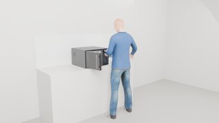
9.9 s · move mug → cavity_place 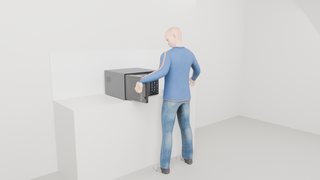
15.6 s · push door 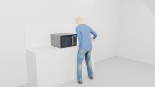
20.6 s · press key_start_30s 25.1 s · wait · display, interior_light, turntable 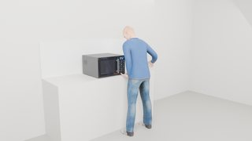
29.5 s · press key_stop_eco 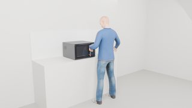
35.0 s · pull door 41.8 s · move mug → home: mug
microwave_v2_set_clock microwave_v2 · 19.2 s · 28 steps · hands: left 3/3 key presses contact-tested ✓ status sentence family grounded target normalized achieved why refused succeeded press the Clock key press key_clock times 1, hold_s 0.3 1/1 presses activated succeeded turn the dial to 6:00 turn dial setting 6:00, joint_from_rad 0.0, joint_to_rad 1.5, regrips 1 joint_rad 1.5 succeeded press the Select key press dial_select times 1, hold_s 0.3 1/1 presses activated succeeded turn the dial to 6:30 turn dial setting 6:30, joint_from_rad 1.5, joint_to_rad 1.7, regrips 0 joint_rad 1.7 succeeded press the Select key press dial_select times 1, hold_s 0.3 1/1 presses activated succeeded wait 2 seconds wait duration_s 2.0
Set the clock to 6:30 with the Clock key, the dial and Select
microwave_v2_set_clock · external camera · 19.2 smicrowave_v2_set_clock · first-person camera · 19.2 smicrowave_v2_set_clock · hand close-up camera · 19.2 s
▶ play all three pause ↺ restart
a01_settle press key_clock rotate dial press dial_select rotate dial press dial_select
gaze left hand right hand body device 0s 5s 10s 15s a01_settle · idle · 0.0–1.0 s · kinematic a02_look_clock · look_at · 1.0–1.6 s · kinematic a03_reach_clock · reach left · 1.0–2.7 s · kinematic a03_reach_clock a04_align_clock · pregrasp left · 2.7–3.3 s · kinematic a05_press_clock · press left · 3.3–4.0 s · contact_dynamics a06_release_clock · release left · 4.0–4.5 s · kinematic a07_look_dial · look_at · 4.5–5.1 s · kinematic a08_align_dial · pregrasp left · 4.5–5.3 s · kinematic a09_turn_dial_1 · rotate left · 5.3–6.3 s · assisted_grasp a10_regrip_dial_1 · release left · 6.3–6.8 s · kinematic a11_pinch_dial_1 · pregrasp left · 6.8–7.4 s · kinematic a12_turn_dial_2 · rotate left · 7.4–8.4 s · assisted_grasp a13_release_dial · release left · 8.4–8.9 s · kinematic a14_look_dial_select · look_at · 8.9–9.5 s · kinematic a15_align_dial_select · pregrasp left · 8.9–9.7 s · kinematic a16_press_dial_select · press left · 9.7–10.4 s · contact_dynamics a17_release_dial_select · release left · 10.4–10.9 s · kinematic a18_look_dial · look_at · 10.9–11.5 s · kinematic a19_align_dial · pregrasp left · 10.9–11.6 s · kinematic a20_turn_dial · rotate left · 11.6–12.3 s · assisted_grasp a21_release_dial · release left · 12.3–12.8 s · kinematic a22_look_dial_select · look_at · 12.8–13.4 s · kinematic a23_align_dial_select · pregrasp left · 12.8–13.6 s · kinematic a24_press_dial_select · press left · 13.6–14.3 s · contact_dynamics a25_release_dial_select · release left · 14.3–14.8 s · kinematic a26_left_back · retreat left · 14.8–16.2 s · kinematic a26_left_back a27_wait · idle · 16.2–18.2 s · kinematic a27_wait a28_end · idle · 18.2–19.2 s · kinematic contact_start @ 3.61 s (key_clock, measured) button_activated @ 3.65 s (key_clock, measured) button_released @ 4.11 s (key_clock, measured) contact_end @ 4.11 s (key_clock, measured) contact_start @ 9.96 s (dial_select, measured) button_activated @ 10.00 s (dial_select, measured) button_released @ 10.46 s (dial_select, measured) contact_end @ 10.46 s (dial_select, measured) contact_start @ 13.87 s (dial_select, measured) button_activated @ 13.91 s (dial_select, measured) button_released @ 14.37 s (dial_select, measured) contact_end @ 14.37 s (dial_select, measured) 0.4 s · a01_settle 2.4 s · press key_clock 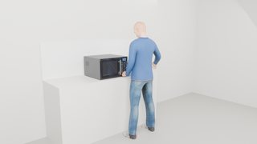
6.3 s · rotate dial 9.7 s · press dial_select 11.7 s · rotate dial 15.4 s · press dial_select Movable parts Device shown open. Numbered markers sit on the coloured parts; the table gives joint type, travel and the mechanism label used in the runs.
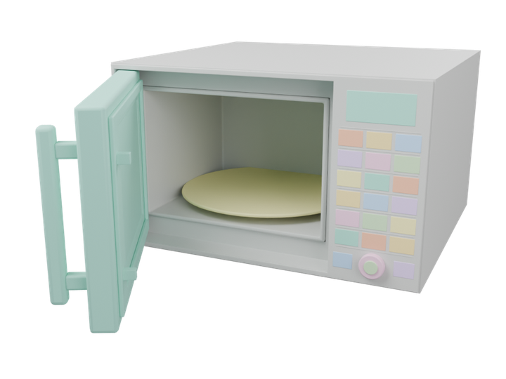
door 1 key_auto_cook 2 key_healthy_cook 3 key_kids_menu 4 key_dough_proof 5 key_keep_warm 6 key_veggie 7 key_power_defrost 8 key_popcorn 9 key_beverage 10 key_convection 11 key_grill 12 key_microwave 13 key_mw_grill 14 key_mw_conv 15 key_clock 16 key_power_level 17 key_kitchen_timer 18 key_preheat 19 key_stop_eco 20 key_start_30s 21 dial 22 dial_select 23 turntable 24 display 25 microwave_v2 joint travel mechanism 1 ↻ hinge 95° assisted_grasp 2 ↔ slide 1.5 mm contact_dynamics 3 ↔ slide 1.5 mm contact_dynamics 4 ↔ slide 1.5 mm contact_dynamics 5 ↔ slide 1.5 mm contact_dynamics 6 ↔ slide 1.5 mm contact_dynamics 7 ↔ slide 1.5 mm contact_dynamics 8 ↔ slide 1.5 mm contact_dynamics 9 ↔ slide 1.5 mm contact_dynamics 10 ↔ slide 1.5 mm contact_dynamics 11 ↔ slide 1.5 mm contact_dynamics 12 ↔ slide 1.5 mm contact_dynamics 13 ↔ slide 1.5 mm contact_dynamics 14 ↔ slide 1.5 mm contact_dynamics 15 ↔ slide 1.5 mm contact_dynamics 16 ↔ slide 1.5 mm contact_dynamics 17 ↔ slide 1.5 mm contact_dynamics 18 ↔ slide 1.5 mm contact_dynamics 19 ↔ slide 1.5 mm contact_dynamics 20 ↔ slide 1.5 mm contact_dynamics 21 ↔ slide 1.5 mm contact_dynamics 22 ↻ hinge 720° assisted_grasp 23 ↔ slide 1.5 mm contact_dynamics 24 ↻ hinge 7200° device_motor 25 ✦ effect illustrative_effect 26 ✦ effect illustrative_effect